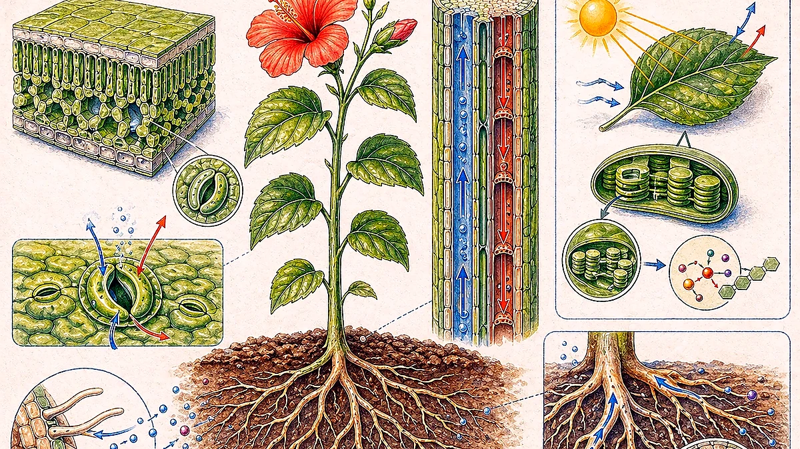
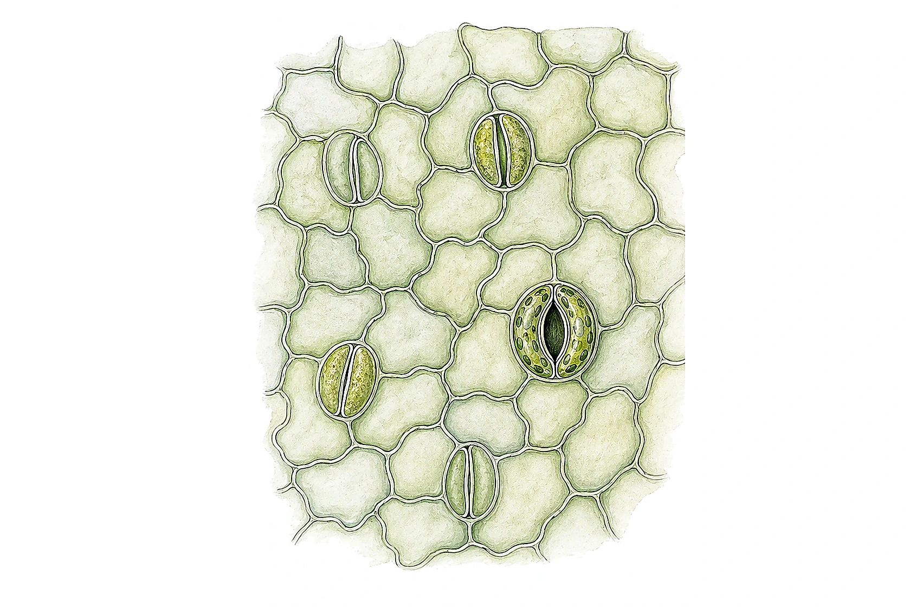
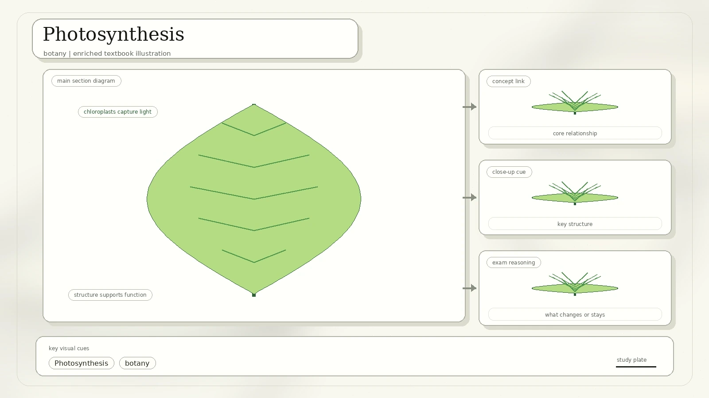
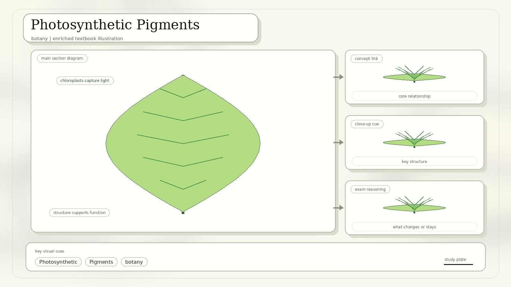
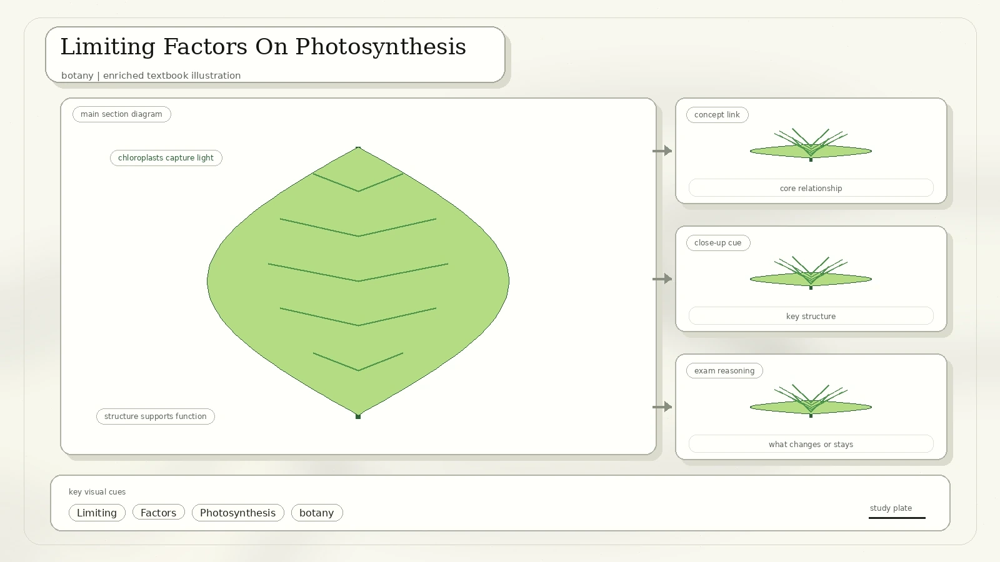
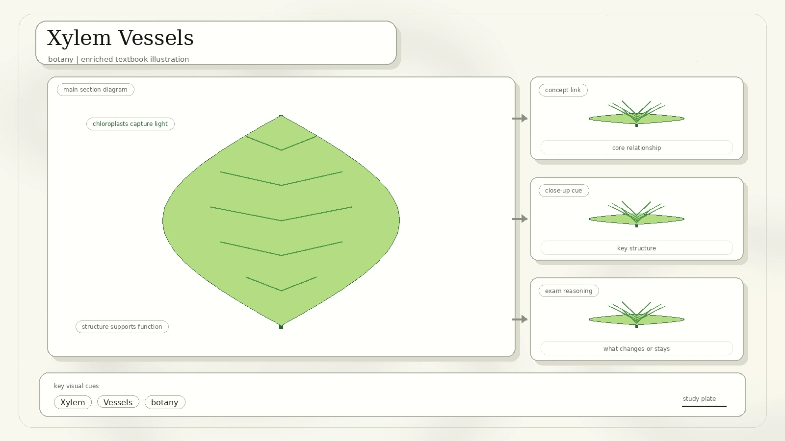
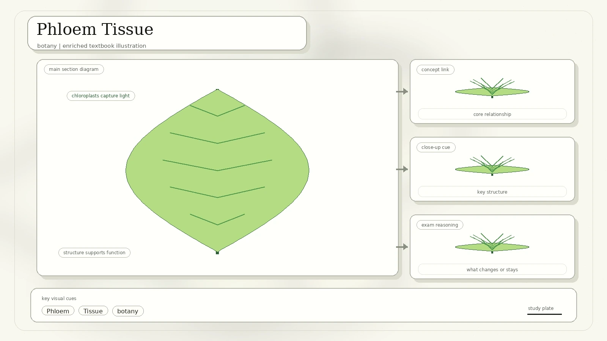
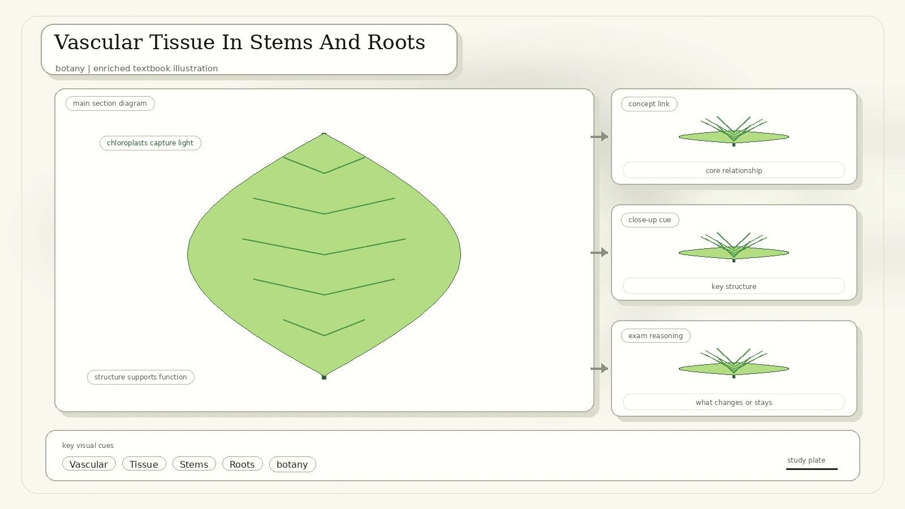
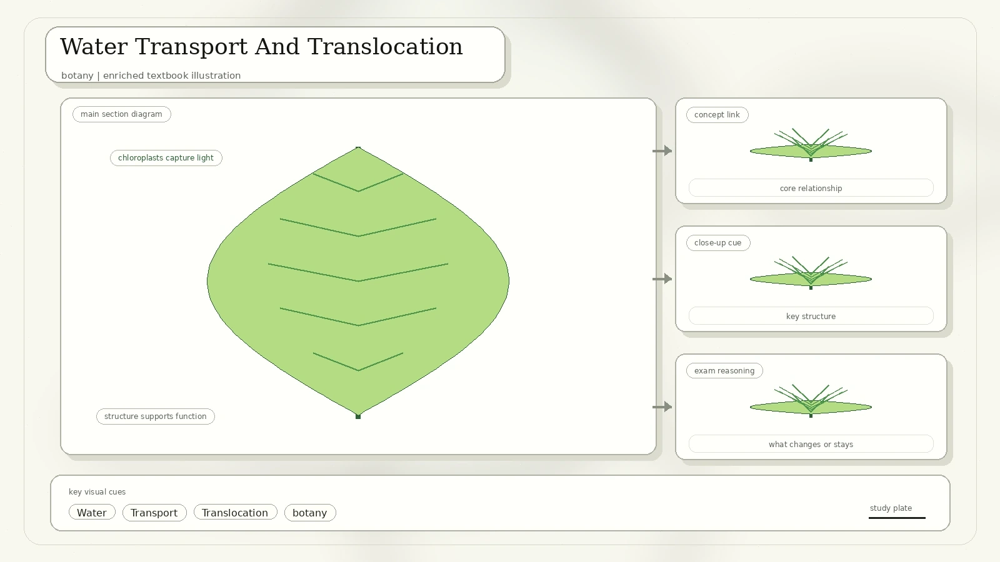

What Are Plants?
Plants are predominantly photosynthetic eukaryotes of the kingdom Plantae. Historically, Plantae included algae and fungi, but current definitions exclude fungi, some algae, and prokaryotes.

Multicellularity, cellulose cell walls, and photosynthesis using primary chloroplasts.
Some plants are non-photosynthetic, including examples in the scan such as beechdrops and Indian pipe.
"All photosynthetic organisms are plants" is false; "all plants are photosynthetic" is also false.
Plant Evolution And Diversity
The scan's evolution diagram moves from green algae through bryophytes, early vascular plants, seedless vascular plants, gymnosperms, and angiosperms. Flowering plants radiated most recently.

Plant diversity includes variation in species, traits, genetics, and ecosystems.
Habitat loss, climate change, invasive species, overexploitation, and pollution.
Why it matters: plant diversity supports ecosystem stability and human benefits such as food, medicine, materials, and fuel.
Leaf Structure And Function
The leaf is one of the world's principal food factories. Its shape and internal tissue arrangement support sunlight absorption, gas exchange, and transport.

| Leaf Part | Function |
|---|---|
| Leaf blade or lamina | Thin and broad, giving a large surface area to volume ratio for sunlight absorption and gas diffusion. |
| Petiole | Holds the leaf away from the stem so it receives more light. |
| Midrib and veins | Carry food away from leaves and bring water and mineral salts to the leaves. |
| Palisade mesophyll | Closely packed photosynthetic cells with many chloroplasts. |
| Spongy mesophyll | Irregular cells with air spaces for fast carbon dioxide diffusion; fewer chloroplasts than palisade cells. |
| Upper and lower epidermis | Single layers of closely packed cells, often protected by a waxy cuticle. |
Guard Cells And Stomata
Plants open stomata during the day for carbon dioxide intake and close them at night or during water stress to reduce water loss by transpiration.
- Guard cells control stomatal opening by changing water potential within themselves.
- During the day, energy from chloroplasts helps potassium ions enter guard cells.
- Lower water potential causes water to enter guard cells by osmosis.
- Guard cells become turgid and bend apart because the wall beside the pore is thicker.
- When guard cells lose water, they become flaccid and the stoma closes.

Photosynthesis
Photosynthesis is the process by which plants convert carbon dioxide and water into sugars using sunlight as energy in the presence of chlorophyll.

Equation: 6CO2 + 12H2O -> C6H12O6 + 6O2 + 6H2O
Chlorophyll absorbs light energy. Water is split by photolysis into hydrogen and oxygen; oxygen gas is released and energy carriers are made.
The Calvin cycle uses stored chemical energy to convert carbon dioxide into carbohydrate. No direct light energy is required in this stage.
Photosynthetic Pigments
Photosynthetic pigments absorb energy from sunlight and make it available to the photosynthetic apparatus. In land plants, the main classes are chlorophylls a and b plus carotenoids.

Absorbs strongly in blue and red regions of the spectrum.
Green light is reflected or transmitted more than red and blue light.
Leaf colour can indicate plant nutrition status.
Limiting Factors On Photosynthesis
Light intensity, carbon dioxide concentration, and temperature can limit the rate of photosynthesis.

At constant temperature and carbon dioxide, increasing light raises the rate until a plateau is reached.
Increasing carbon dioxide raises the plateau because carbon dioxide becomes less limiting.
Temperature has little effect at low light, but increases rate at high light until enzymes become denatured at high temperature.
Xylem Vessels
Plant vascular tissues consist of xylem and phloem. Xylem vessels are elongated hollow tubes made of xylem cells linked end to end; xylem cells are dead at maturity.

Transport water and mineral salts from roots to leaves.
No cytoplasm or end walls block water flow.
Thick strengthened walls prevent collapse and provide support.
Phloem Tissue
Phloem tissue consists of sieve tube elements and companion cells. Sieve tube elements are elongated thin-walled living cells with degenerate protoplasm and porous sieve plates.

Conduct sugars and amino acids from leaves to other plant parts.
Contain nucleus, cytoplasm, and many mitochondria; provide energy to load sieve tubes with sugar.
Vascular Tissue In Stems And Roots
In a dicot stem, vascular bundles form a ring around a central pith. Each bundle has phloem facing the cortex, xylem facing the pith, and cambium between them. Cambium cells can differentiate into new xylem and phloem.

Outer epidermis with waterproof cuticle, cortex beneath it, vascular bundles in a ring, and central pith.
Outer piliferous layer bears root hairs. Cortex is storage tissue. Xylem radiates from the center with phloem alternating between xylem arms.
Water Transport And Translocation
Water travels from roots to leaves against gravity using root pressure, capillary action, and most importantly transpiration pull.

| Mechanism | How It Works |
|---|---|
| Root pressure | Mineral ions move into xylem by active transport, lowering water potential so water enters by osmosis and pushes upward a short distance. |
| Capillary action | Water rises in narrow xylem tubes due to interactions between water molecules and xylem walls; important in small or young plants. |
| Transpiration pull | Water vapour diffuses out through stomata, pulling water upward through xylem. The scan calls it the main force for upward water movement. |
| Translocation | Sugars move through phloem from source tissues, usually leaves, to sink tissues that use or store sugar. |
What To Remember
Predominantly photosynthetic eukaryotes with cellulose walls and chloroplasts, with exceptions.
Light reactions split water; the Calvin cycle uses carbon dioxide to build carbohydrate.
Xylem moves water and minerals; phloem moves sugars and amino acids.
Transpiration pull is the main force moving water upward in large plants.